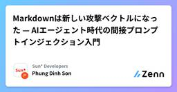
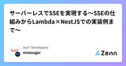

Sun* Developersのフィード
https://zenn.dev/p/sun_asterisk
Sun*は「誰もが価値創造に夢中になれる世界」をビジョンに掲げ、4カ国・6都市に拠点を置くデジタル・クリエイティブスタジオです。2026年3月末現在、2,000名以上のエンジニアやクリエイターが在籍しています。
フィード

GPT-6 AstraとClaude Fable 5.1は何が違うのか
Sun* Developersのフィード
はじめに2026年9月上旬、AnthropicとOpenAIがほぼ同時に新しいモデルを発表しました。Claude Fable 5.1とGPT-6 Astraです。最初にざっと情報を見たときは、正直この2つはかなり似ているなと思いました。どちらもコンテキストウィンドウは100万トークン前後で、コーディングやreasoning、tool use、computer use、それに何ステップも続くタスクにも対応しています。API料金の基本部分も同じで、入力100万トークンあたり10ドル、出力100万トークンあたり50ドルです。スペック表やベンチマークだけを見ていても違いは見えてきません...
1日前

Markdownは新しい攻撃ベクトルになった — AIエージェント時代の間接プロンプトインジェクション入門
Sun* Developersのフィード
はじめにGitHub でリポジトリを clone して、Claude Code に「このコードベースを読んで説明して」と頼む。よくやりますよね。その README.md の中に、目に見えない命令が仕込まれていたらどうでしょうか。README.md、.cursorrules、SKILL.md。「ただのテキストファイルでしょ」と思っていたものが、いま攻撃の入り口になっています。しかも厄介なのは、アンチウイルスやEDRでは検知できないことです。実行ファイルでもスクリプトでもなく、ただの日本語や英語の文章だからです。ウイルス対策ソフトは「悪意ある文章」をスキャンしてはくれません。OW...
1日前

「良いプロンプト」の作り方
Sun* Developersのフィード
「AIに聞いたのに、欲しい答えが返ってこない…」こんな経験、ありませんか？「このエラーを直して」AIにそう聞いたら、長い説明が返ってきた。読んでみても、「結局、何をすればいいの？」となってしまう。あるいは、「PythonでCSVを読み込むコードを書いて」とお願いしたら、コードは返ってきた。でも、「自分の環境では動かない」「コードの意味が分からない」「エラー処理がない」……。そして最後には、「やっぱりAIって難しいな」と思ってしまう。でも、ちょっと待ってください。本当にAIの問題でしょうか？実は、AIをうまく使える人と、うまく使えない人の違い...
1日前

サーバーレスでSSEを実現する〜SSEの仕組みからLambda×NestJSでの実装例まで〜
Sun* Developersのフィード
こんにちは。バックエンドエンジニアのMizukiです。WEBサービス開発のTechLeadと並行して、エンジニア部署のマネージャー補佐をしています。こちらの記事でLambda/APIGateway/NestJSでSSE(Server Sent Events)を検討したけれどもユースケースが合わず実現には至りませんでした。しかし、せっかく技術検証したので今回はSSEに合うユースケースで実装した例を紹介しようと思います。今回は、ブログ記事編集画面にてAIレビューをする機能を実装します。Lambda/API Gateway/CloudFront/Next.js/NestJS/Postgre...
3日前

Co-purchaseからPersonalized Recommendationまで — 商品レコメンドの仕組みをシンプルに理解する
Sun* Developersのフィード
はじめにAmazon、楽天市場、Temu などのECサイトを利用していると、次のようなレコメンドをよく見かけます。Frequently Bought TogetherCustomers Also BoughtRecommended for YouSimilar Productsユーザーから見ると、単に「システムがいくつかの商品を選んで表示している」ように見えます。しかし、その裏側では、購入履歴、商品情報、検索履歴、クリック、カート、ユーザーごとの好みなど、さまざまなデータが使われています。最近、私はECサイトの商品レコメンドシステムの調査・改善に関わる機会がありま...
6日前

なんちゃって共同編集 〜技術的・時間的な制約が大きい中で共同編集の要望が発生したら〜
Sun* Developersのフィード
こんにちは。バックエンドエンジニアのMizukiです。WEBサービス開発のTechLeadと並行して、エンジニア部署のマネージャー補佐をしています。フォームの編集画面に「共同編集」の要望が上がったとき、多くの人がまず思い浮かべるのはGoogle Docsのような、文字単位でリアルタイムに反映されるリッチな共同編集だと思います。しかし、既存のインフラ（Lambda / API Gateway / Cloudfront / NestJS / Next.js、DBはPostgreSQLのみ）を変えずに、限られた工数で対応しなければならない、という制約の中で検討を進めた結果、最終的に採用したの...
9日前
AIコーディングエージェントを狙う攻撃あるけど、なんかしたほうがいいの？
Sun* Developersのフィード
Claude Code や Codex みたいなAIコーディングエージェント使ってますか？細かく指示しないでも自律的にファイルを読んだり、コマンド実行したり、ネットにもアクセスして調査したりしてくれて超絶便利ですよね。でも実は、攻撃者から見ると 「そのAIさえ乗っ取ってしまえばやりたい放題できる最高な環境」 でもあります。この記事では、AIを狙う攻撃にどんなものがあるのか、そして主要ツールはデフォルトでどこまで守ってくれるのかを、各社の公式ドキュメントをもとに見ていきます。あ、一応言っておきますが、これは2026年9月1日時点での調査結果ですからね！ AIを狙う攻撃手法まず...
11日前
【Supabase】複数同時開発のマイグレーション競合を自動修復するスクリプト
Sun* Developersのフィード
はじめにチーム開発で共有の開発DBを使っていると、マイグレーションの競合問題に悩まされることがあります。複数人が並行して機能開発 → 各自がマイグレーションを作成長期ブランチの並行開発 → ブランチごとに異なるマイグレーションが存在Git Worktree での並列作業 → 同一マシン上で複数ブランチを同時に開発いずれのケースでも、自分のブランチには存在しないマイグレーションが共有DBに適用されている状態が発生し、CI/CDでエラーになります。この記事では、Supabase環境で発生するこのマイグレーション競合問題と、それを自動修復するスクリプトの実装について解...
12日前
明細の履歴テーブル設計に思いを馳せる
Sun* Developersのフィード
こんにちは。バックエンドエンジニアのMizukiです。WEBサービス開発のTechLeadと並行して、エンジニア部署のマネージャー補佐をしています。備品の注文のような「行×列のグリッド」を持つ画面で、変更履歴の保存と差分表示をする際に、設計・実装方針に迷いました。この記事では3つの方式を比較し、要件に応じてどれを選ぶべきかを整理します。 対象システムの前提以下のような社内発注システムを例に考えます。企業が会社の備品（文房具など）を注文します複数人が同じ注文を更新する可能性があります（そのため変更履歴を残したいと考えています）変更した行、追加した行、削除した行に色をつけて表...
17日前
# AI Coding Agentに全部教えれば賢くなると思っていた — Context Engineeringについて考えてみた
Sun* Developersのフィード
Claude CodeにBrowser Testを書いてもらって、Context Engineeringについて考えたこんにちは、DDです。普段はWeb Applicationの開発をしていて、最近はClaude Codeを使った開発をいろいろ試しています。この記事は、その中で気づいたことをまとめたものです。最近、Claude Codeを使うことが増えた。簡単な実装なら「このAPIにこの機能を追加して」とお願いするだけで、関連するファイルを探して、コードを書いて、Testまで実行してくれる。自分で全部書くより速いことも多い。ただ、既存のProjectで使っていると、たまに「動く...
17日前
[生成AI Vol.4] ClaudeとGitHub Projectsを連携させて、PMを"クリック地獄"から解放する
Sun* Developersのフィード
前回はVol.3として「Ollama × Open WebUIでローカルLLM環境を構築する」方法についてご紹介しました。Vol.4となる今回は少し目線を変えて、PM（プロジェクトマネージャー）視点でのAI活用術をご紹介したいと思います。テーマは、ずばり 「Claude を GitHub Projects に繋いで、タスク管理を自動化する」 です。 なぜPMこそAI連携が必要なのか？PMの日常業務には、地味だけれど時間を奪う作業がたくさんあります。スプリント計画のたびに、Excelやドキュメントにまとめたタスク一覧を、1件ずつGitHub Projectsの画面に手入力する...
19日前
Microsoft AB-900, AB-730 を取得するまで🎓
Sun* Developersのフィード
はじめに2026年に入り、企業の生成AI導入は「単なるチャット活用の検証（PoC）」から「業務プロセスに組み込むAIエージェントの本格運用」へとシフトしています。それに伴い、Microsoft資格にもCopilotおよびAIエージェントに特化した新たな認定が登場しました。今回、AB-900（Copilot とエージェント管理の基礎） と AB-730（AI Business Professional） の2資格を同時に合格できましたので、その学習プロセスと、技術者・ビジネスパーソン双方が押さえるべきポイントを記録として残します。MicrosoftのAIエージェントガバナンス設...
19日前
強いAIを2つ使えば安くなる？ Claudeを司令塔、Codexを実装担当にするトークン効率化
Sun* Developersのフィード
はじめに複雑な要件定義や設計判断には、最も高い能力を持つAIモデルを使いたい。一方で、リポジトリの調査、実装、テスト、修正といったトークン量の多い作業まで同じモデルへ任せると、そのモデルの利用枠を早く消費します。そこで、高性能モデルを「司令塔」、別のモデルを「実装ワーカー」として分けます。司令塔は目的、計画、品質判断に集中し、ワーカーがコードを調査・実装します。この記事では、Claude Codeに/build-loopスキルを追加し、次のAIチームを作ります。Claude Fable 5: 司令塔。要件整理、計画、レビュー、最終承認を行うGPT-5.6 Sol: 第...
24日前
FIFA × Avalanche：ワールドカップのチケット販売にブロックチェーンは本当に必要なのか
Sun* Developersのフィード
2026年6月の初め、ワールドカップが始まる数日前に、暗号資産のコミュニティで、あるニュースが大きな話題になった。FIFAのチケットシステムがブロックチェーン上で動いているというニュースだ。実験やデモではなく、本番で使われた。Avalancheで事業成長を担当するシニア・バイス・プレジデントのArielle Pennington氏によると、チケット購入権に関係する取引活動は、一時は通常の最大24倍になった。アクティブアドレス数も約10倍に増えた[1]。Nansenのレポートでは、トークン化されたチケットの権利が10万件以上購入され、FIFAの独自チェーン上での取引・引換総額は2,500...
25日前
テックリード育成時に伝えたこと
Sun* Developersのフィード
こんにちは。バックエンドエンジニアのMizukiです。WEBサービス開発のテックリードと並行して、エンジニア部署のマネージャー補佐をしています。この記事では、私がメンバーをテックリードとして育成する中で、実際に伝えてきたことを4つの観点に分けてまとめます。 1. スケジュールから逆算するまずは、目の前のタスクに飛びつくことではなく、ゴールから逆算してスケジュールを組み立てることです。 1-1. QCDSで考えるスケジュールを組む際にまず意識してほしいと伝えているのが、QCDS（Quality・Cost・Delivery・Scope）という4つの軸です。Quality（...
1ヶ月前
[生成AI Vol.3] ローカルLLM環境を構築！Ollama × Open WebUIで自分だけのプライベートAIを作る
Sun* Developersのフィード
前回は「業務効率を最大化するプロンプトデザインの基礎と実践」についてご紹介しましたが、Vol.3となる今回は、話題の 「ローカルLLM（Local LLMs）」 をテーマに、自分のPC上にプライベートなAI環境を構築する方法をご紹介します！出典：Ollama Website Ollamaとは？なぜローカルLLMが必要なのか？ Ollamaの概要Ollama（オラマ）は、オープンソースの大規模言語モデル（LLM）を個人用PCやローカルサーバー上で直接実行できるオープンソースツールです。従来、ローカル環境でLLMを動かすには、Python環境の構築、CUDAの設定、モデルウェ...
1ヶ月前
ClaudeのUsageの仕組みを理解し、効率的に使う方法
Sun* Developersのフィード
はじめにClaude を使い始めたばかりの頃、たいしたことをしていないのに使用量の上限にすぐ達してしまう、ということはないでしょうか。その多くは、Claude が使用量をどう計算しているのかをまだ理解していないことが原因です。私もまったく同じでした。かなり感覚的に Claude を使っていて、必要なことをそのまま打ち込むだけで、日々の操作が知らないうちに使用量を消費していることに気づいていませんでした。使用量の減りが早いのに理由がわからなかったので、いろいろ調べて、この記事にまとめました。同じような状況の人が読んで、少しでも無駄なく使えるようになれば幸いです。この記事は2つのパ...
1ヶ月前
【GCP】組織間でのプロジェクト移行（Cross-Organization Migration）完全実践ガイド
Sun* Developersのフィード
1. はじめに企業規模でクラウドインフラを運用・管理する中で、システムリソースの移行はよくあるシナリオです。特に、組織再編やM&A（企業の合併・買収）、またはパートナー企業間でのプロダクトの移管・引き継ぎなどの際、Google Cloud（GCP）のプロジェクト全体を「移行元組織（Organization）」から完全に新しい「移行先組織」へと引っ越しさせる作業は、インフラエンジニアにとって非常に重要なタスクとなります。理論上は、Google Cloudが提供する gcloud コマンドを使うことで、プロジェクトの移行自体はシンプルに行えます。しかし、実際に稼働中の本番環境...
1ヶ月前
トークン節約としてのコマンドラッパープログラム作成のススメ
Sun* Developersのフィード
コーディングエージェントに毎回同じ調査をやらせるのは、トークンの無駄遣いです。定型的な操作は一度プログラムに固めて、エージェントにはそれを呼ばせるだけにします。この記事では、この方針がなぜトークン節約になるのかと、実際にどう作るのかを説明します。 毎回生成させると何が起きるかClaude Codeに「自分が担当しているIssueとPRを一覧して」と頼んだ場面を考えます。エージェントは概ね次の手順を踏みます。gh CLIで何ができるか思い出す。あるいは gh --help を実行して確認するgh pr list --author @me や gh api のコマンドを組み立...
1ヶ月前
Claude Codeのようなエージェントをゼロから作る
Sun* Developersのフィード
はじめにGitHubで70kを超えるスターがついている shareAI-lab/learn-claude-code を、全20章読みました。このリポジトリは、Claude Codeのような「エージェントハーネス」（agent harness、モデルが動くための土台）をゼロから作る教材です。各章が、前の章のコードに仕組みを1つだけ足していきます。この記事では第1章から第20章まで順番に、それぞれが何を解決しているのかを見ていきます。読んで特に面白かった章はくわしく、そうでない章は考え方だけを書きます。!全部を追う時間がない方は、第1〜2章（ループとツール）、第5章（TodoWr...
1ヶ月前